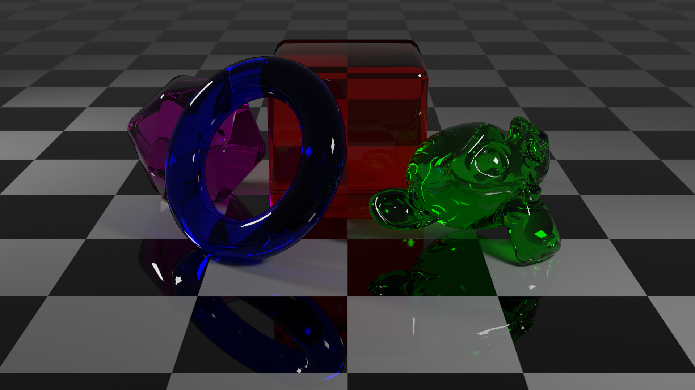
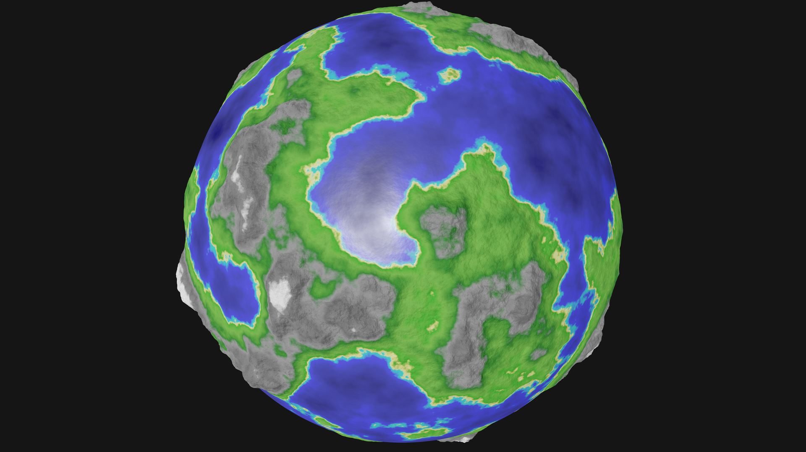
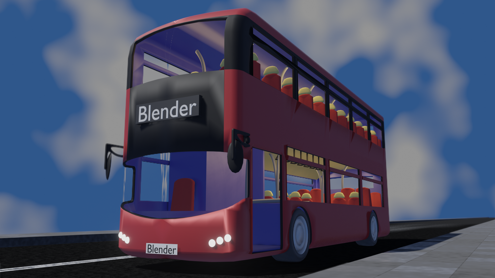
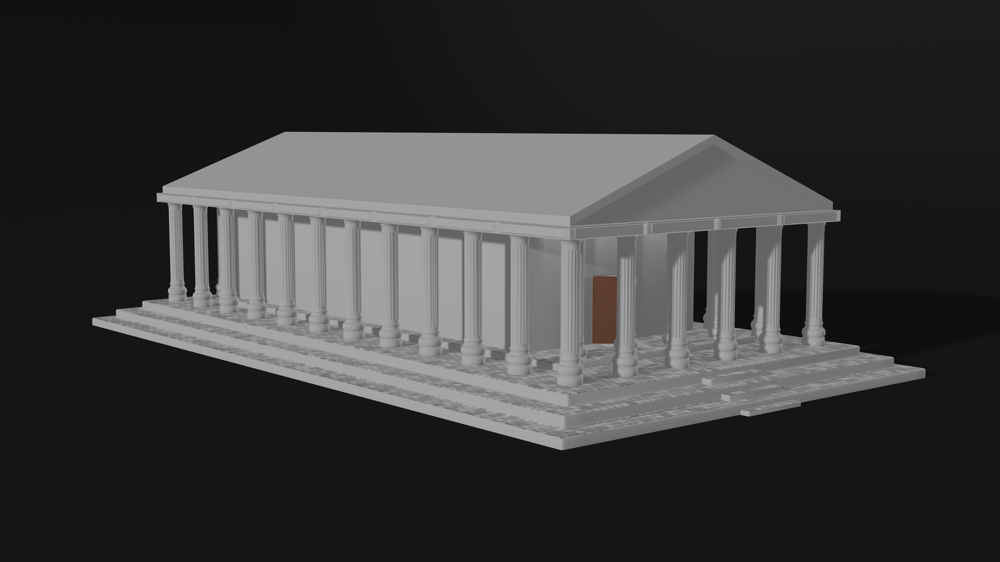
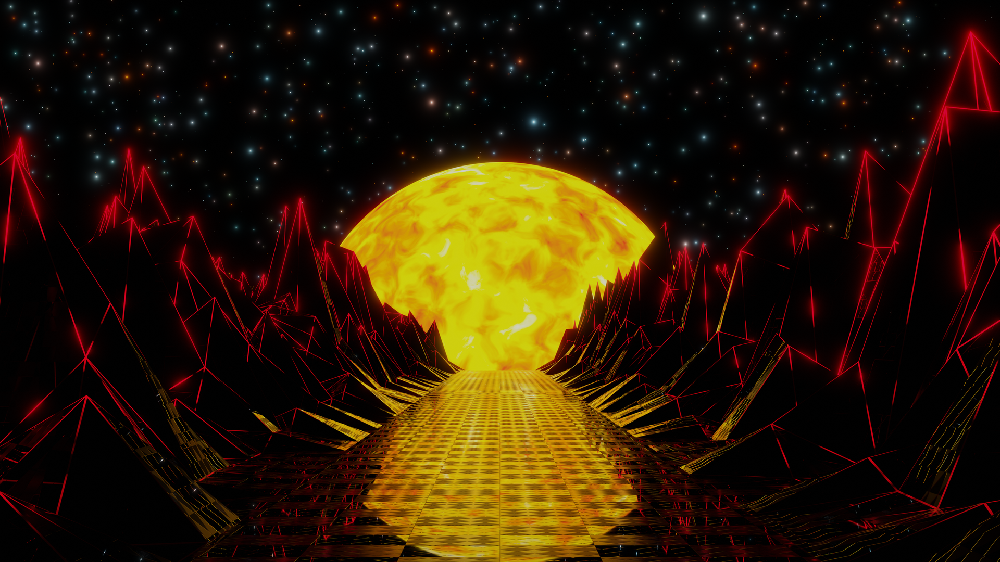

Accessibility
Leave Feedback
24 Hour Blender Challenge
Day Each
Solo
Skills Used:
Blender
When Blender 2.8 came out I wanted to learn it for a few reasons:
- To get a better appreciation of what the artists I work with do.
- Gain skills in the assets creation pipeline.
- To have a creative outlet from programming at work.
- I enjoy learning new things.
To achieve these goals I set myself the challenge to learn a new system in blender and produce an art work based on that system in only 24 hours.
This is a hand picked sub set of all the renders I have done as part of this challenge. You can see the full collection on my Instagram.
Neon Wave
This was the first render I did in Blender. My goal was just to learn how the interface worked. To do this I followed along with this YouTube tutorial.
Zooming Boxes
My goal in this render was to make a looping video. But I also ended up learning:
- Precise modelling
- Camera Perspectives
- Animation Curves
Cup of Tea
My goal in this render was to learn how to model complex shapes. I also created some other tea-set models.
Water Splash
In this render my goal was to learn about Blender's new FLIP fluid simulation.
AR
In this render I learnt about:
- Compositing
- Finding camera settings from an image
- Matching the lighting in an image

Glass
My goal in this render was to learn about glass shaders.
IPhone
My goal in this render was to learn about adding textures to materials. In this example I started with a screenshot and modelled everything else.

Procedural Planet Generator
In this render I learnt about:
- Displacements
- Bump maps
- Normals
- More complex procedural materials
Rusting Chain
In this render my goal was to learn about animating material properties.

Brighton Bus
In this render I was trying to learn how to model a large number of assets in the limited amount of time.
Pool Table
In this render my goal was to learn more about Blender's physics.

Greek Parthenon
In this render my goal was to learn about non destructive modelling by using modifiers.
Magic Monkey
My goal in this render was to learn about Blender's cloth simulation.

8K Desktop Background
In this render I learnt about optimizing render times.